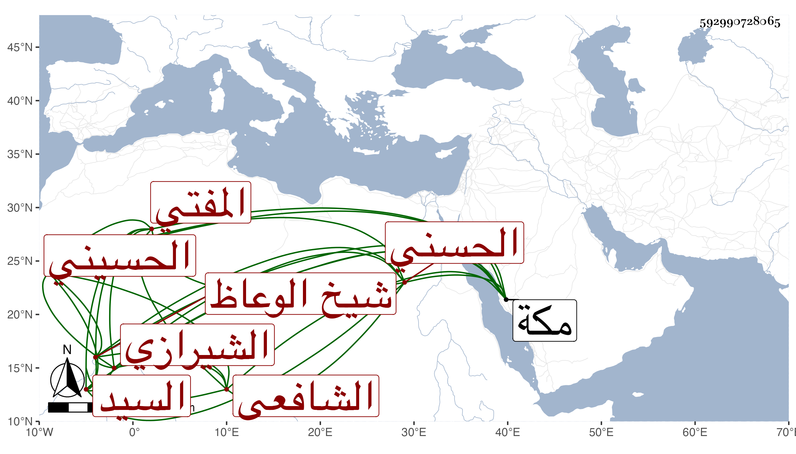

0902Sakhawi.DawLamic.ITO20230111-ara1.EIS1600.592990728065
Biography ID: 592990728065
107
عبد الجليل بن إسماعيل بن إسحاق بن أحمد بن إسحاق بن إبراهيم السيد رفيع الدين بن العالم المفتي وجيه الدين وهو بقيد الحياة بن العز ابن الاستاذ شيخ الوعاظ والمذكرين نظام الملة والدين ابن عز الدين بن شرف الدين الحسيني الحسني الشيرازي الشافعي ابن أخي حسين بن إسحاق الماضي . ممن لقيني بمكة فأخذ عني قراءة وسماعا وكتبت له كما بينته في التاريخ الكبير .
